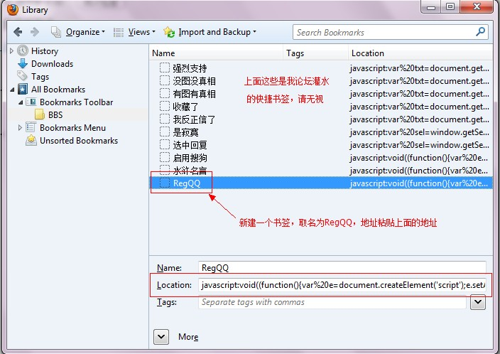
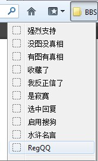
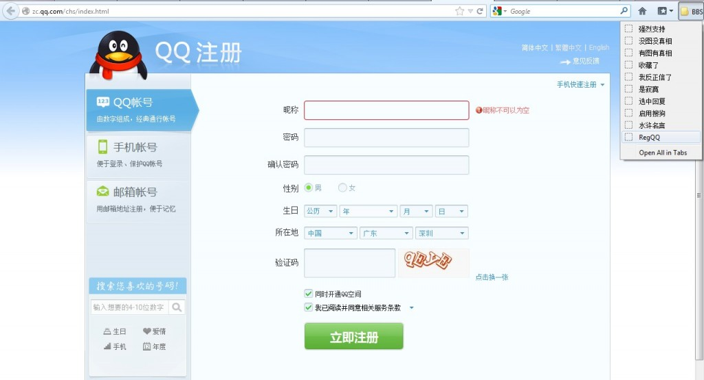
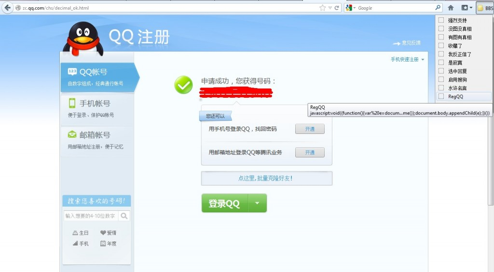
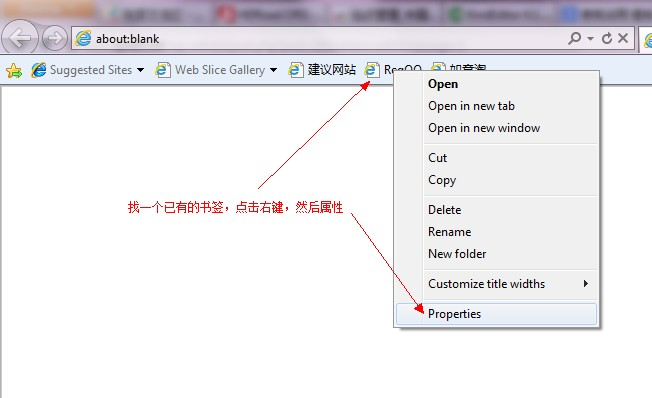
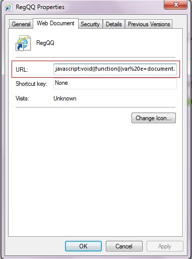

只需在浏览器书签中增加一个地址，就能快速注册QQ号！为何要注册多个QQ号码？
地址如下：
javascript:void((function(){var%20e=document.createElement('script');e.setAttribute('type','text/javascript');e.setAttribute('src','http://regqq.sinaapp.com/regqq.php?nickname=默认昵称&password=regqq2012&rand='+new%20Date().getTime());document.body.appendChild(e);})())
注意：以上为一行代码，无换行。其中红色的nickname和password的参数，你可以改为自己的默认昵称和默认密码，使用下面的小工具可生成你的个性化地址：
默认昵称： 默认密码：
然后就可以将这个地址加到自己浏览器的书签中去了：
Firefox火狐浏览器
按快捷键Ctrl+Shift+B，在书签工具栏下面建一个书签，如下图：

然后就可以在书签中点击一下RegQQ试试了：

如果不在注册页面上，则会先跳到注册页面，这时再点一下RegQQ：

点完就会自动填表，没有验证码的会自动提交，有验证码就会等你输入，输入完4位后自动提交，不需要按“立即注册”按钮。
注册成功后，再次点击RegQQ（会清除cookie），然后重复刚才的操作。

IE浏览器
IE需要在一个已经有的书签上，点击右键，然后“属性”：
然后将地址粘贴到URL一栏：

剩下的操作就和火狐一样了。
一般一次可以注册2～4个QQ号码，如果提示“本次注册需要短信验证”或“IP限制”之类的，请过15分钟再试或者重新拨号更换IP。
如果点击RegQQ没有反应，请检查复制的地址是否有误，例如使用记事本来修改，有可能会自动增加换行，可以在菜单“格式”下取消“自动换行”。
注册好后，请立即登录一下，然后定期登录，以免被腾讯收回。